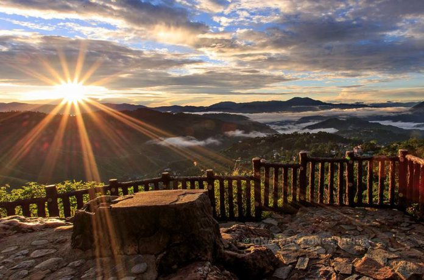

Visitor Information
📍 Location: Mines View Road, Baguio City
💰 Entrance Fee: ₱10 (as of 2025)
🕕 Opening Hours: 6:00 AM – 8:00 PM
Witness the Scenic Beauty of Mines View Park
A panoramic view of Benguet’s mountains, valleys, and old mining town of Itogon.
About Mines View Park
Mines View Park is one of Baguio’s most famous viewing decks, offering a breathtaking overlook of the mining community of Itogon and the vast Cordillera mountains. Visitors can enjoy photo ops, horseback riding, local stalls, and classic Baguio snacks.
Map Location
Nearby Restaurants & Attractions
- 🥤 Good Shepherd Convent – Famous Ube Jam (2 mins)
- 🧵 Souvenir Stalls – Silverworks, woven items, pasalubong
- 🐴 Horseback Riding – Near entrance area
Jeepney Terminal (Pacdal–Mines View)
📍 Location: Assumption Road, near Burnham Park
💵 Fare: ₱12.00 – ₱15.00
🛣 Route: Session Road → Leonard Wood → Pacdal Circle → Mines View Park